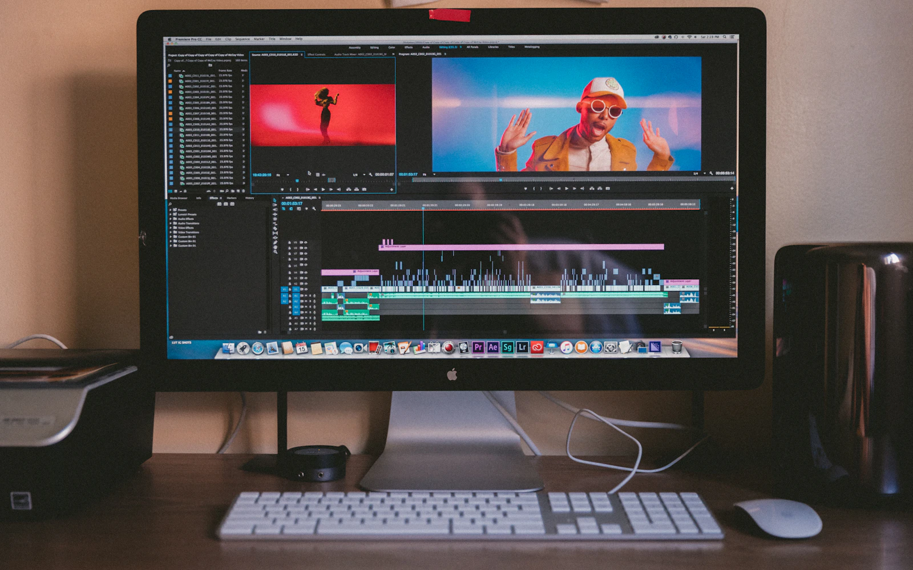

YouTube video editing
Shape long-form footage with considered pacing, clean audio, titles and a clear visual flow.
What you get: edited master in an agreed delivery format.
From a quick social edit to a polished brand film, we shape pacing, sound, graphics and format around the message you want people to remember.

Share your footage, references and intended platform. We’ll confirm formats, turnaround and deliverables before production begins.
Shape long-form footage with considered pacing, clean audio, titles and a clear visual flow.
What you get: edited master in an agreed delivery format.
Create vertical short-form edits with strong openings, readable captions and platform-safe framing.
What you get: vertical exports and agreed caption styling.
Present your people, offer or event with a polished video shaped around a concise brief.
What you get: brand-aligned edit for your intended channel.
Bring key moments together with sensitive pacing, music and a consistent finish.
What you get: highlight or longer edit as scoped for your footage.
Add purposeful titles, transitions and graphic elements to make information easier to follow.
What you get: motion elements and exports included in the agreed scope.
Support your video with a clear thumbnail concept and well-timed subtitles.
What you get: image or subtitle files in agreed dimensions and formats.
We pay attention to the opening, rhythm, clarity of sound, readable captions and delivery specs. The finishing choices support your message instead of competing with it.

Share the brief, footage, platform and visual references.
We assemble a first cut with the agreed style and format.
Send consolidated notes within the included revision rounds.
Receive approved exports in the agreed file formats.
Share a short brief and we’ll help scope the right edit for your audience.